Pokémon in the NYPL archives
2018-9-23 18:10:09
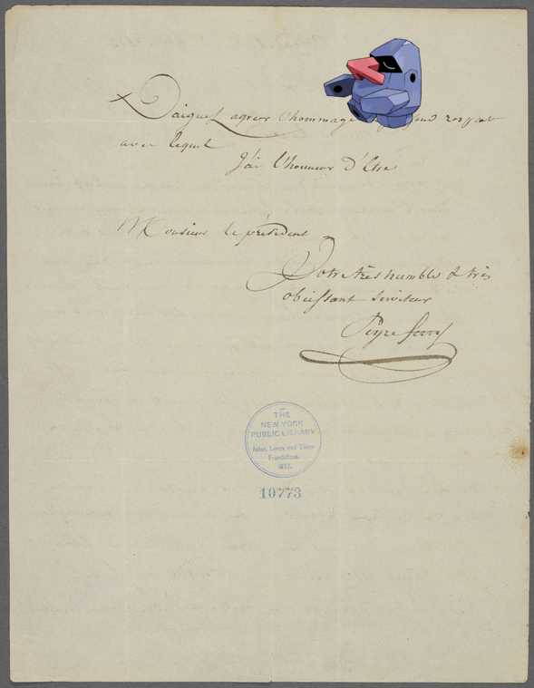
Nosepass on
1813 November 4
2018-9-23 16:10:13
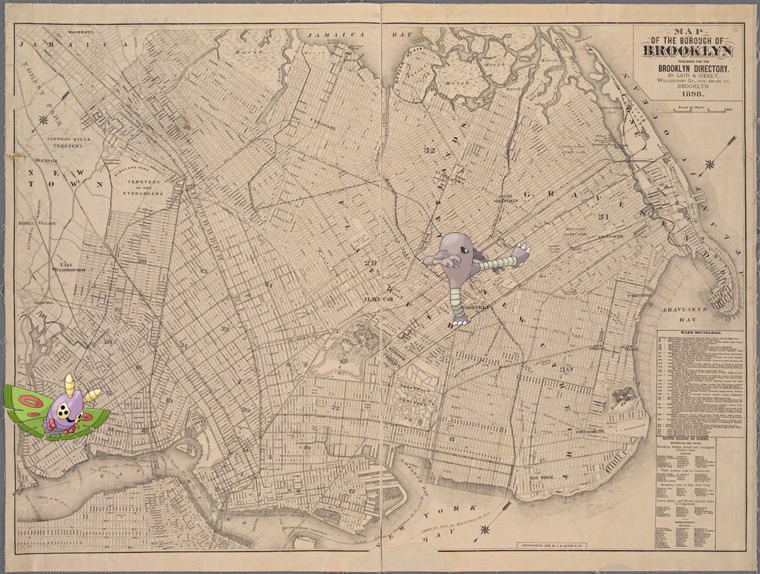
Dustox, Hitmonlee @
Map of the Borough of Brooklyn Published for the Brooklyn Directory.
.
2018-9-23 14:10:06
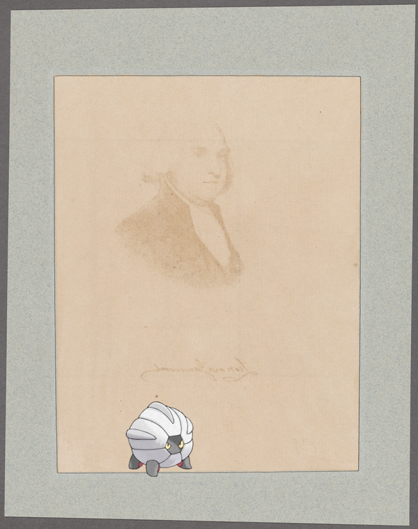
Shelgon ;
Galloway, Joseph. To Thomas Barnesley
2018-9-23 12:10:03
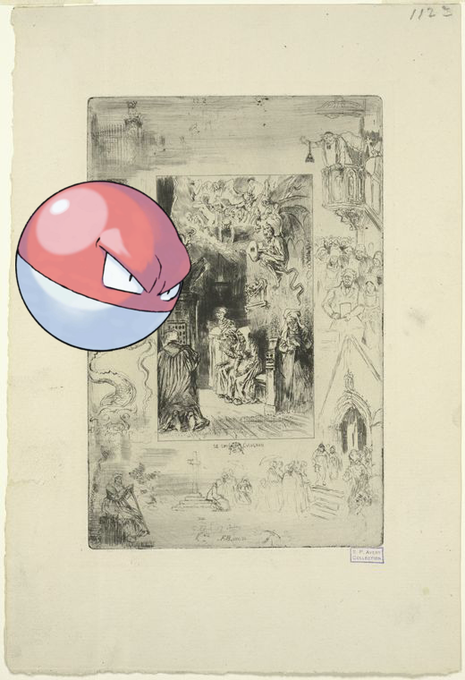
Voltorb ;
Le curé de Cucagnan.
2018-9-23 10:10:04
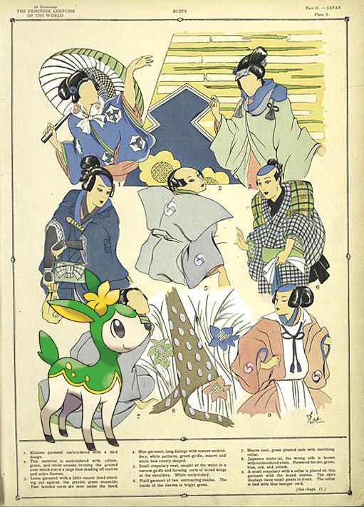
;
Busts
2018-9-23 08:10:05
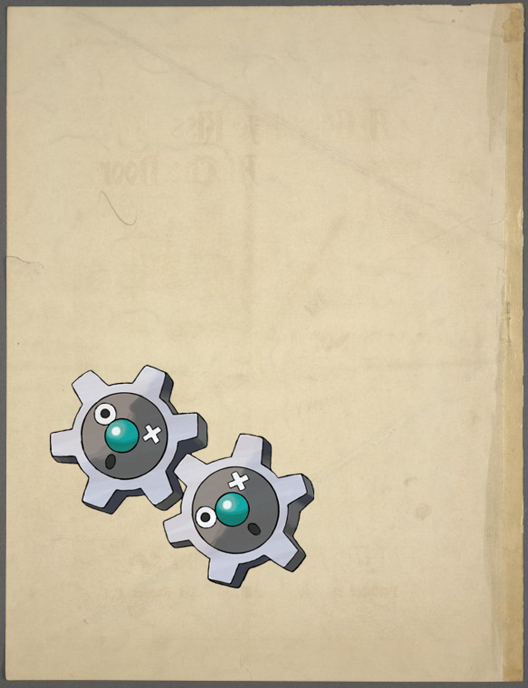
Klink @
A good-by kiss at the door
.
2018-9-23 06:10:04
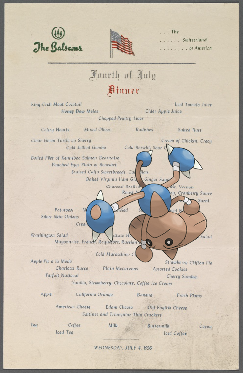
Hitmontop on
The Balsams
!
2018-9-23 04:10:08
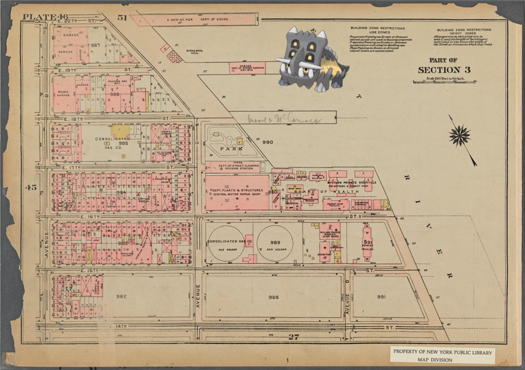
Bastiodon @
Plate 46, Part of Section 3: [Bounded by E. 20th Street, East River Piers, E. 14th Street and Avenue B]
!
2018-9-23 02:10:12
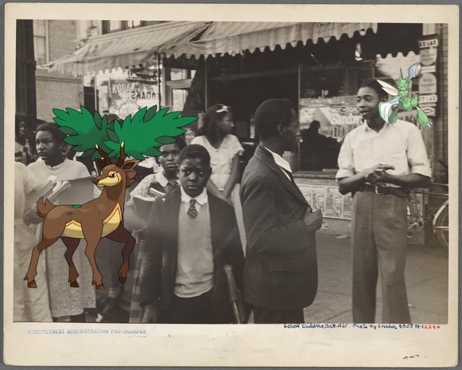
Scyther, @
Negro school children. Arkansas
!
2018-9-23 00:10:03
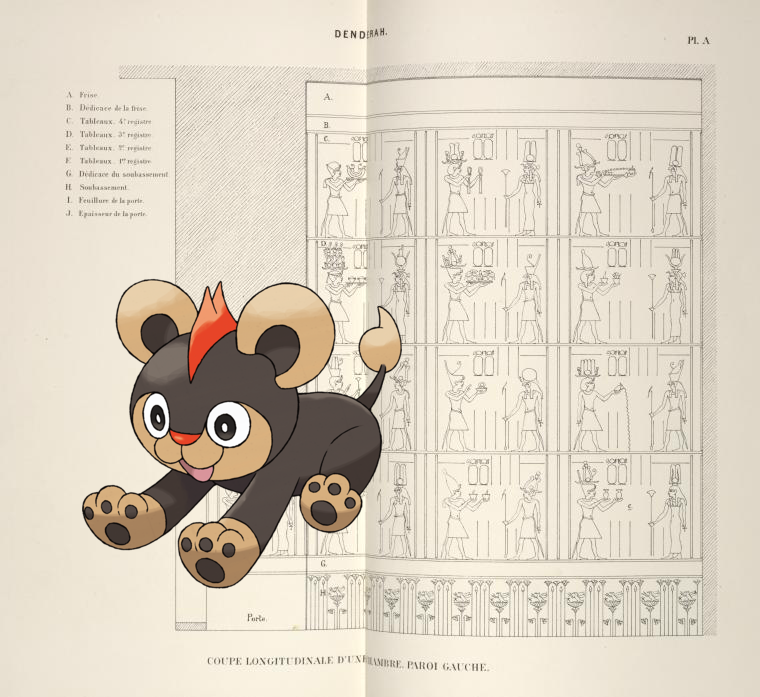
Litleo |
Denderah. Coupe longitudinale d'une chambre. Paroi gauche.
!
2018-9-22 22:10:03
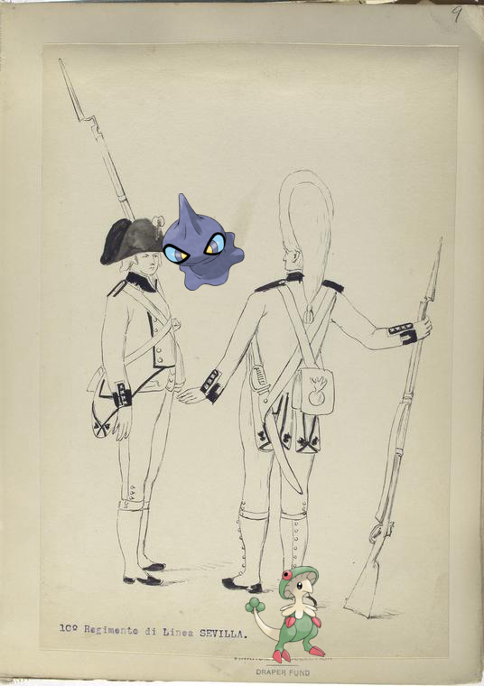
Shuppet, Breloom ;
10-o Regimento di Linea SEVILLA. [1806]
2018-9-22 20:10:04
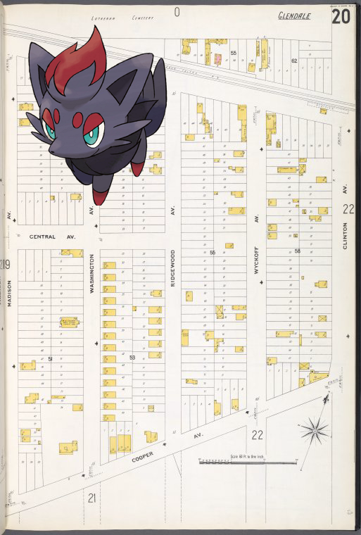
Zorua |
Queens V. 3, Plate No. 20 [Map bounded by Long Island Rail Road, Clinton Ave., Cooper Ave., Madison Ave.]
.
2018-9-22 18:10:07
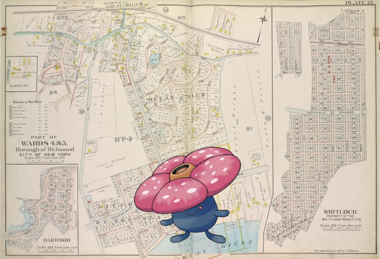
Vileplume ;
Plate 19, Part of Wards 4 & 5: [Map bound by Railroad Ave, The Staten Island Railway Co., Great Kills Road, Amboy Road, Southfield Boulevard, St, Mansion Ave, Cleveland Ave, Nelson Ave, Lindenwood Road, Park Terrace, Seeley Lane, Colon Ave; Sub Plan - Giffords; Oakwood - Brook Ave, Birch St, 16th St, Mild Pond; Whitlock Property of the Whitlock Realty Co. - Amboy Road, Emmett Ave, 12th St, Lincoln Ave, 16th St, Crattan Ave, 18th St, Ocean Ave, Moore St, Washington Ave]
2018-9-22 16:10:04
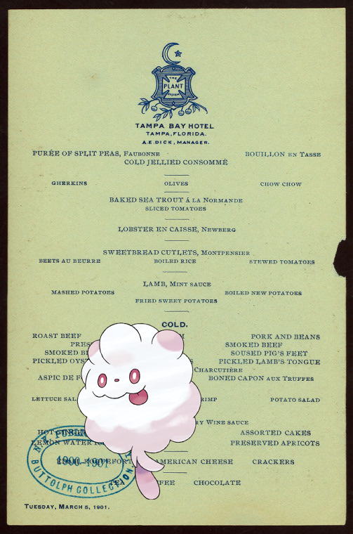
Swirlix |
LUNCHEON [held by] TAMPA BAY HOTEL [at] "TAMPA, FL" (HOTEL;)
2018-9-22 14:10:03
Throh +
[Half title of text for vol. II, La Haute Egypte.]
.
2018-9-22 12:10:07
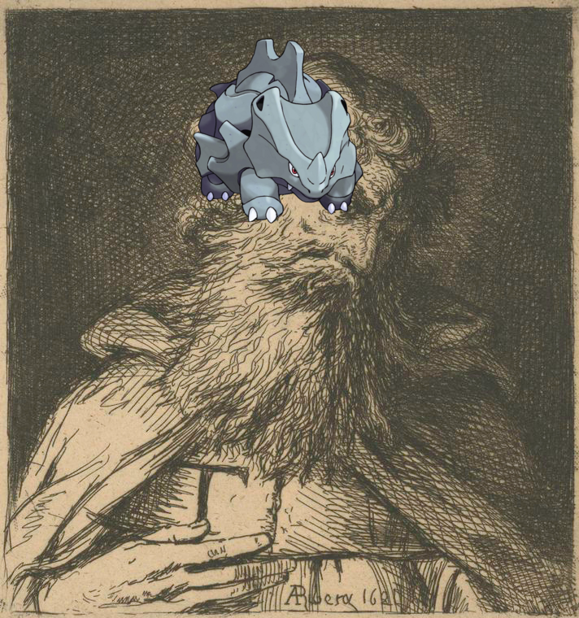
Rhyhorn +
Bust of a man with a long beard, hand on breast.
.
2018-9-22 10:10:03
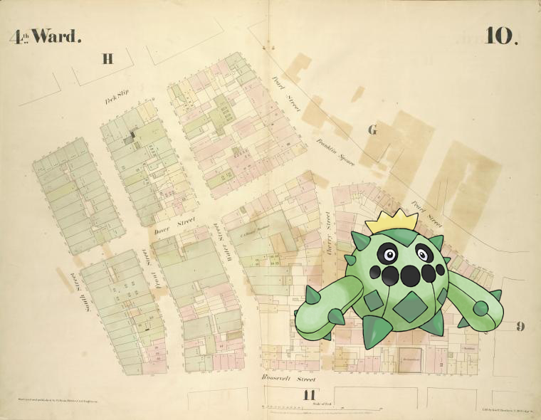
Cacnea +
[4th Ward. Plate 10: Map bounded by Peck Slip, Pearl Street, Franklin Square, Pearl Street, Oak Street, Roosevelt Street, South Street; Including Dover Street, Front Street, Water Street, Cherry Street]
2018-9-22 08:10:03
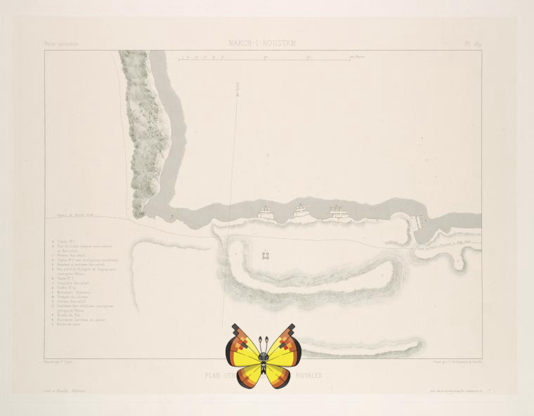
@
Nakch-i-Roustam. Plan général des tombes royales.
!
2018-9-22 06:10:04
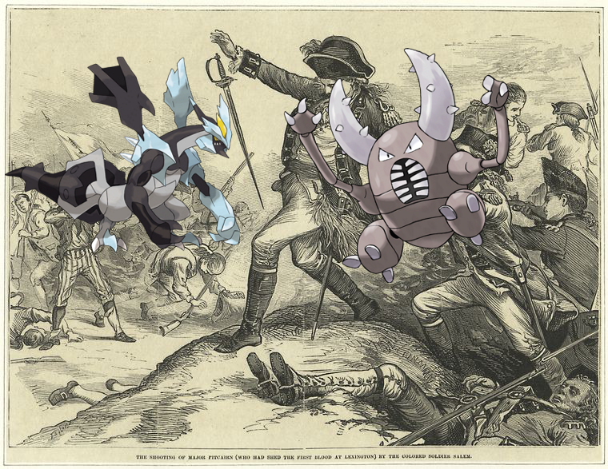
, Pinsir ;
The shooting of Major Pitcairn (who had shed the first blood at Lexington) by the colored soldier Salem.
!
2018-9-22 04:10:04
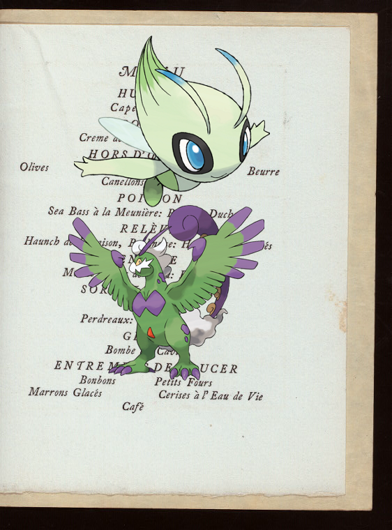
, Celebi –
BANQUET OF WELCOME TO CAPT. BENJAMIN P. LAMBERTON, U.S.N., U.S. FLAGSHIP "OLYMPIA" [held by] THETA DELTA CHI FRATERNITY [at] "SHERRY'S, [NEW YORK, NY]" (REST;)
.
2018-9-22 02:10:04
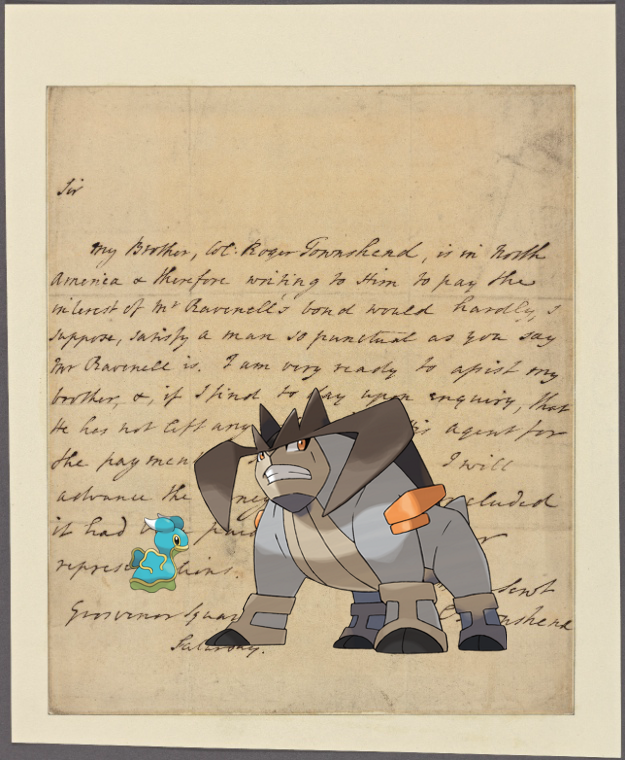
Shellos, Terrakion +
Letter to --
2018-9-22 00:10:04
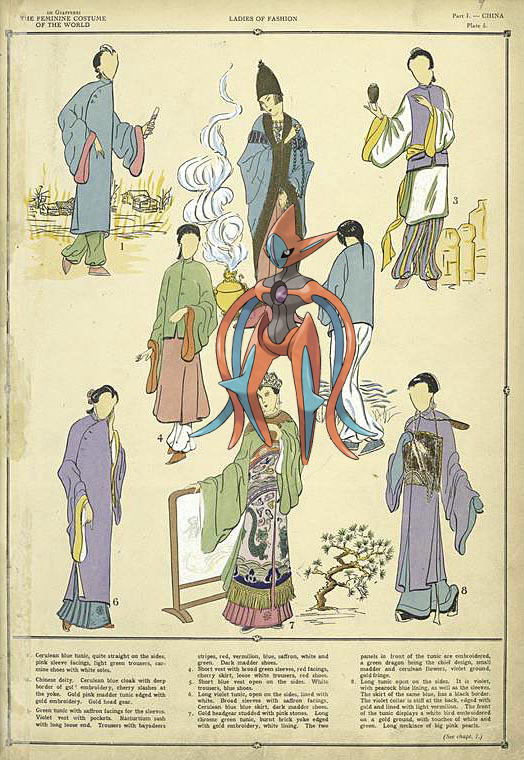
on
Ladies of fashion
2018-9-21 22:10:07
Hippowdon, Horsea |
Rosie Carey
.
2018-9-21 20:10:12
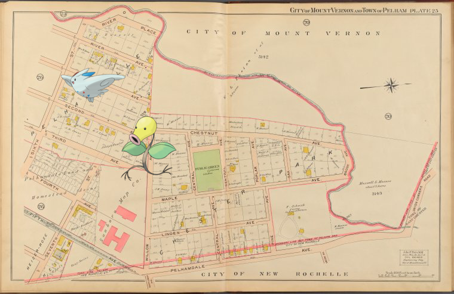
Bellsprout, Togekiss ;
Mount Vernon, Double Page Plate No. 25 [Map bounded by Hutchinson River, Pelhamdale Ave., 7th St., 6th St.]
!
2018-9-21 18:10:06
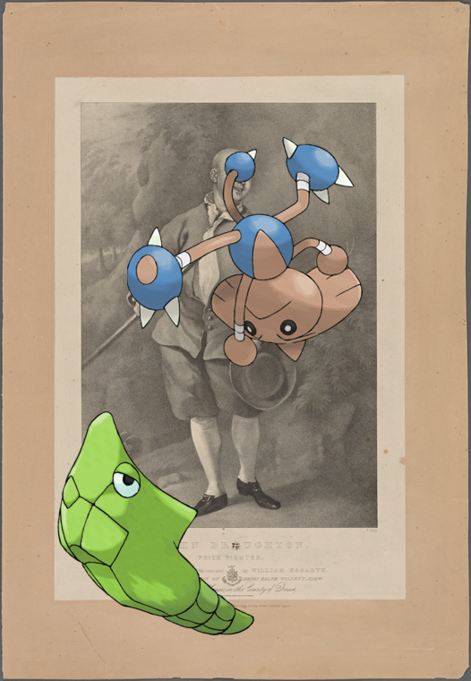
Hitmontop, Metapod +
John Broughton. Prize Fighter.
!
2018-9-21 16:10:04
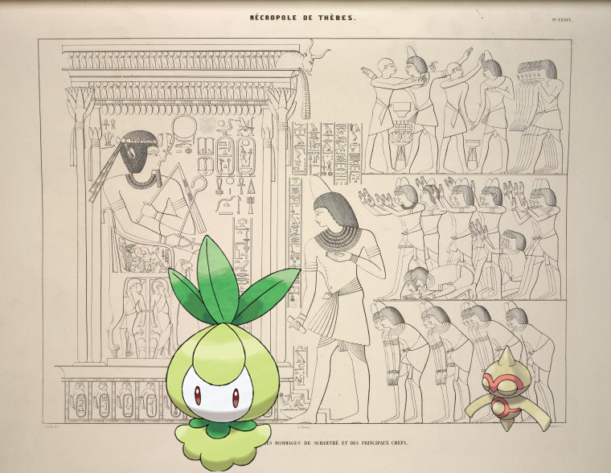
Baltoy, Petilil on
Nécropole de Thèbes. Amounôph III recevant les hommages de Schamthé et des principaux chefs.
.
2018-9-21 14:10:04
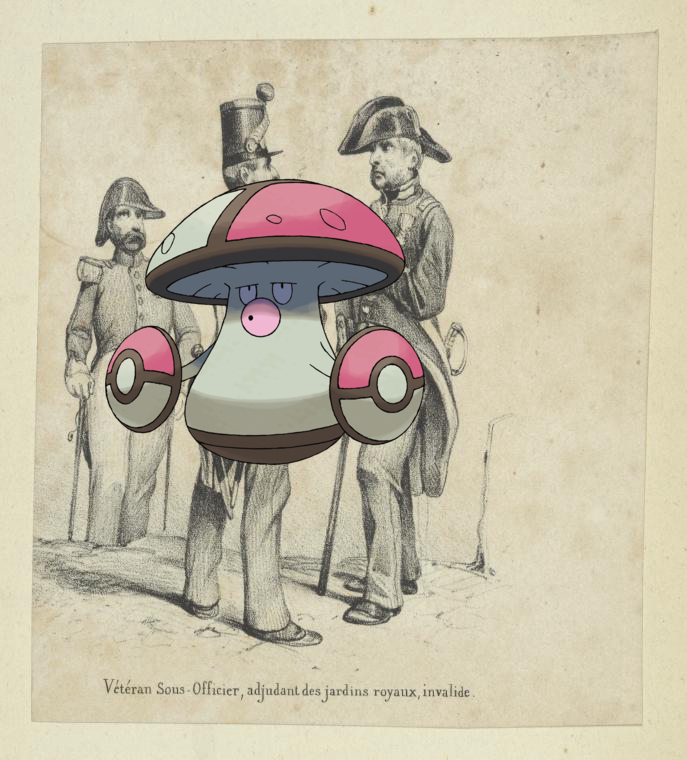
Amoonguss |
France, 1846-1847
2018-9-21 12:10:03
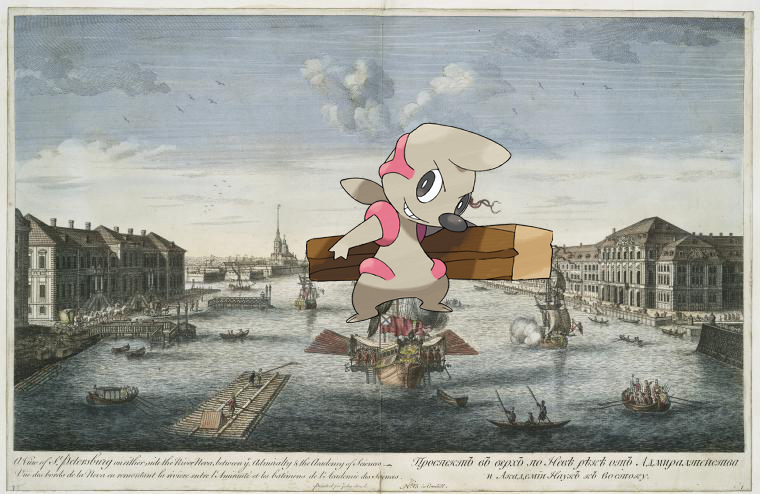
Timburr ;
A View of St. Petersburg on either side of the River Neva, between ye Admiralty & the Academy of Sciences.
2018-9-21 10:10:04
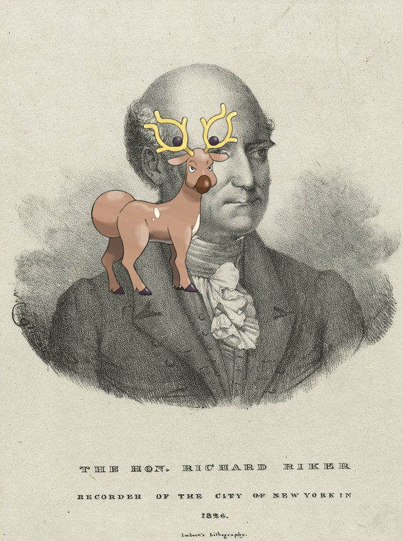
Stantler |
The Hon. Richard Riker Recorder of the City of New York in 1826
2018-9-21 08:10:06
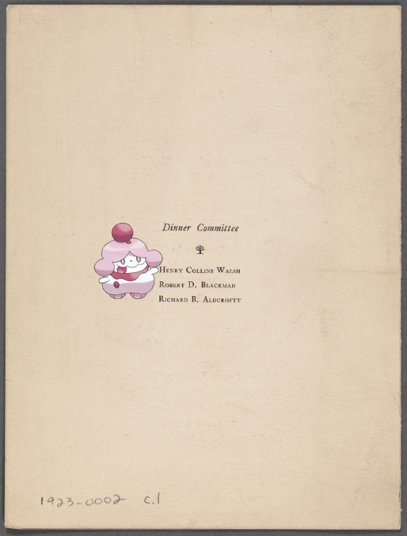
Slurpuff –
Hotel Savoy
.
2018-9-21 06:10:03
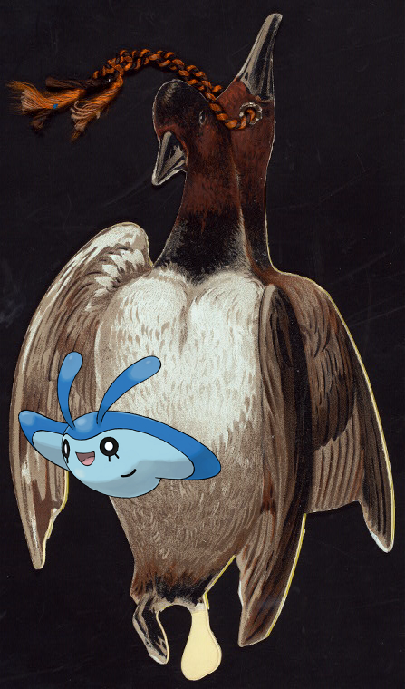
Mantyke @
SIXTEENTH ANNUAL BANQUET [held by] MERCHANTS AND MANUFACTURERS ASSOCIATION OF BALTIMORE CITY [at] "HOTEL RENNERT, BALTIMORE, MD" (HOT;)
!
2018-9-21 04:10:04
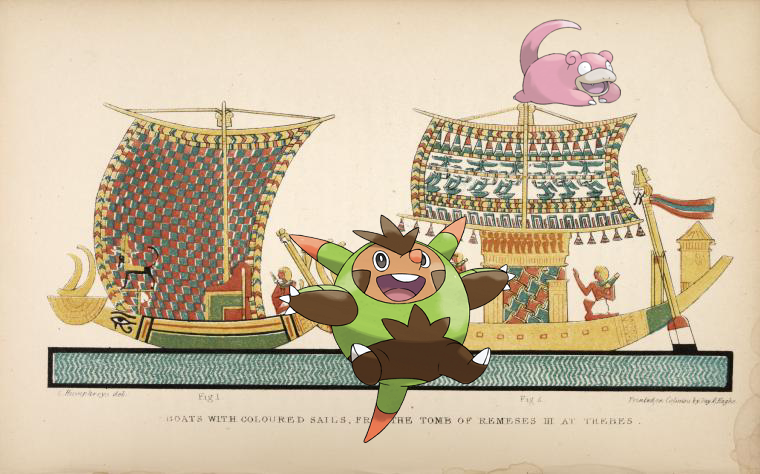
Slowpoke, Quilladin @
Boats with coloured sails, from the Tomb of Remeses III at Thebes.
2018-9-21 02:10:10
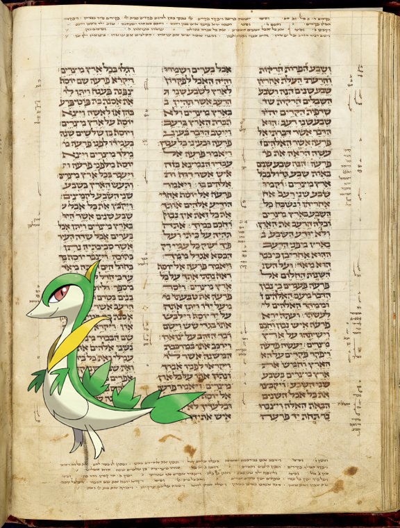
Servine ;
[Xanten Bible.]
.
2018-9-21 00:10:03
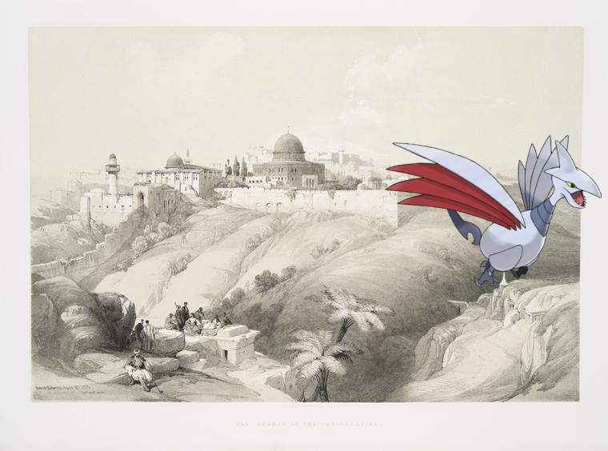
Skarmory |
Jerusalem -- the Church of the Purification
2018-9-20 22:10:05
Psyduck @
Letter to --
.
2018-9-20 20:10:10
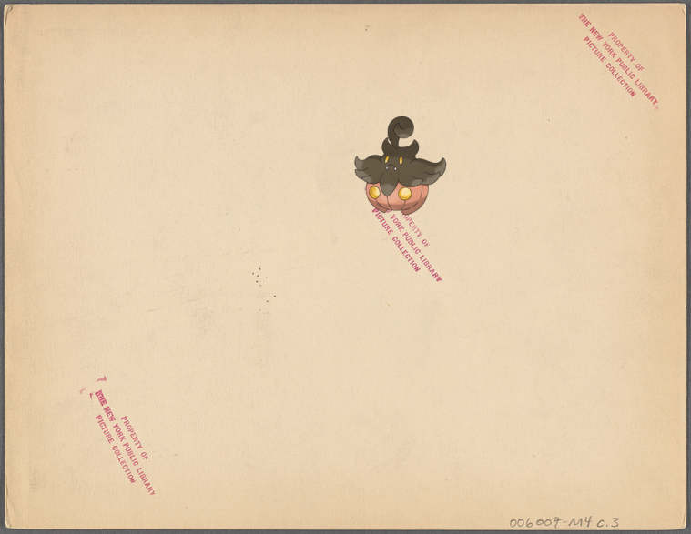
Pumpkaboo-Average ;
Hungarian miner, Calumet, Pennsylvania. Worked in the mines for thirty-four years, now sixty-three with no pension and no work
2018-9-20 18:10:05
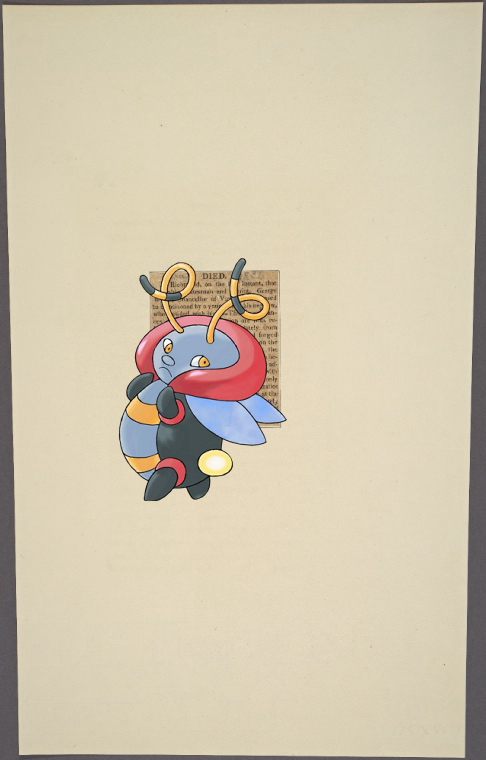
Volbeat |
Clipping
.
2018-9-20 16:10:04
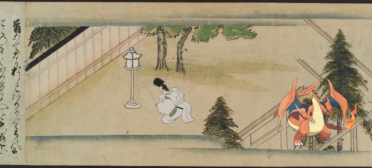
–
Scroll III.
2018-9-20 14:10:06
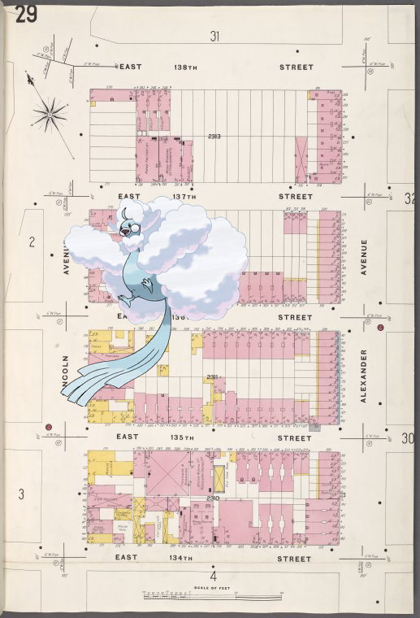
Altaria +
Bronx, V. 9, Plate No. 29 [Map bounded by E. 138th St., Alexander Ave., E. 134th St., Lincoln Ave.]
2018-9-20 12:10:04
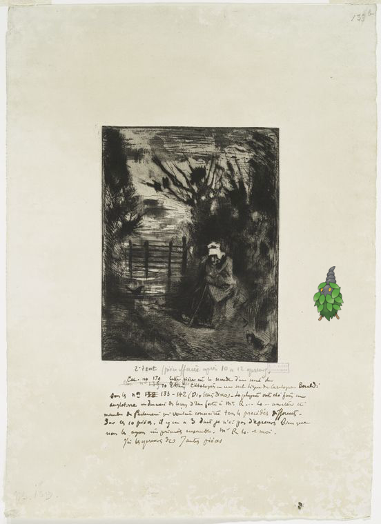
Burmy +
La malgaigne.
55
|
54
|
53
|
52
|
51
|
50
|
49
|
48
|
47
|
46
|
45
|
44
|
43
|
42
|
41
|
40
|
39
|
38
|
37
|
36
|
35
|
34
|
33
|
32
|
31
|
30
|
29
|
28
|
27
|
26
|
25
|
24
|
23
|
22
|
21
|
20
|
19
|
18
|
17
|
16
|
15
|
14
|
13
|
12
|
11
|
10
|
9
|
8
|
7
|
6
|
5
|
4
|
3
|
2
|
1
|
0